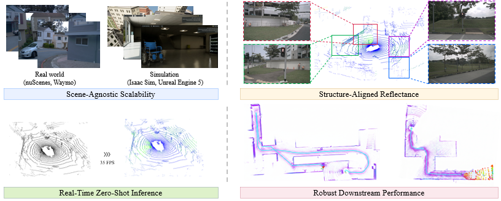

TL;DR
Ultra-Fusion is an ultra-resilient tightly-coupled multi-sensor fusion SLAM framework for intelligent transportation systems. It unifies RGB, IMU, depth, wheel, GNSS, and LiDAR measurements within a timestamp-ordered sliding-window estimator, enabling robust localization under sensor degradation and spatiotemporal uncertainty.
Abstract
Reliable localization is a fundamental capability for intelligent transportation systems, including autonomous driving, legged robots, and aerial vehicles. Although multi-sensor fusion has become a promising paradigm for robust localization, practical systems remain fragile when sensors degrade, such as under poor illumination, LiDAR degeneracy, wheel slippage, or GNSS denial, and when spatiotemporal calibration is imperfect.
To address these challenges, we propose Ultra-Fusion, an ultra-resilient tightly-coupled multi-sensor fusion SLAM framework built upon a unified timestamp-ordered estimator. Ultra-Fusion combines condition-aware initialization, continuous-time LiDAR--inertial geometric modeling, degradation-aware factor scheduling, and online refinement of sensor time offsets and extrinsic parameters. We further introduce the M3DGR benchmark and conduct a large-scale evaluation of 60 representative SLAM systems. Extensive experiments on M3DGR, M2DGR-Plus, KAIST, GrandTour, and MARS-LVIG demonstrate consistent state-of-the-art performance across wheeled robots, legged platforms, and autonomous vehicles.
Contributions
- We propose Ultra-Fusion, a tightly-coupled multi-sensor fusion SLAM framework that unifies asynchronous sensing streams within a timestamp-ordered sliding-window estimator, enabling tighter cross-modal interaction than modular coordination schemes.
- We introduce a condition-aware and spatiotemporally consistent estimation strategy that combines dynamic and low-excitation initialization, continuous-time LiDAR modeling, and online refinement of selected time-offset and extrinsic parameters.
- We develop a degradation-aware tightly-coupled fusion mechanism that performs factor-level scheduling, gating, and down-weighting directly within the unified optimization problem, and we validate it through large-scale benchmarking across M3DGR, M2DGR-Plus, KAIST, GrandTour, and MARS-LVIG.
Pipeline

Ultra-Fusion pipeline. Heterogeneous sensor measurements are organized in timestamp order and fused in a common sliding-window estimator with condition-aware initialization, continuous-time LiDAR modeling, degradation-aware factor scheduling, and online spatiotemporal refinement.